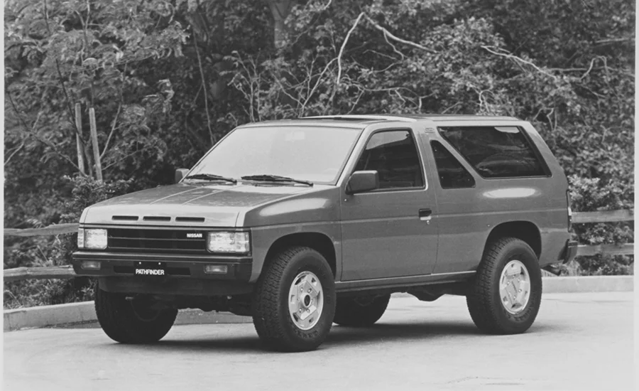
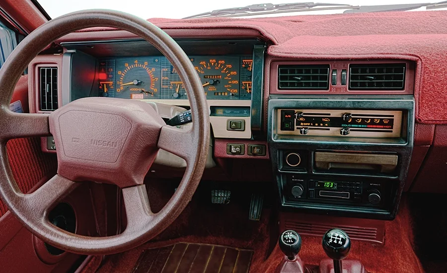
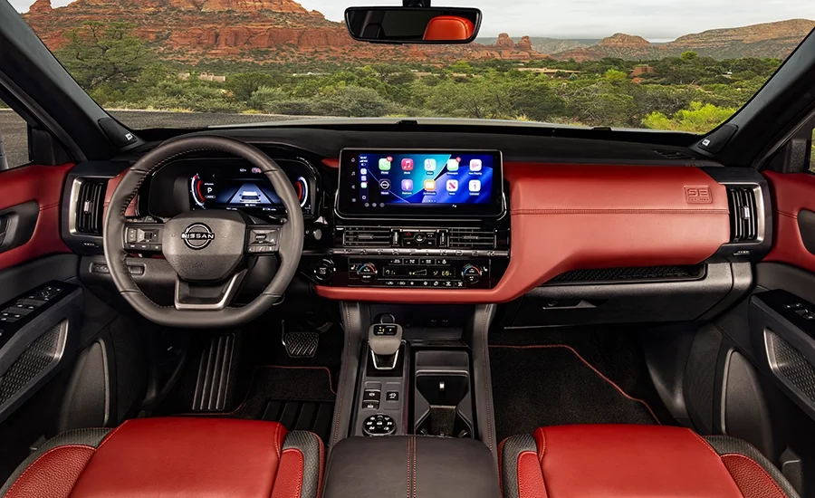
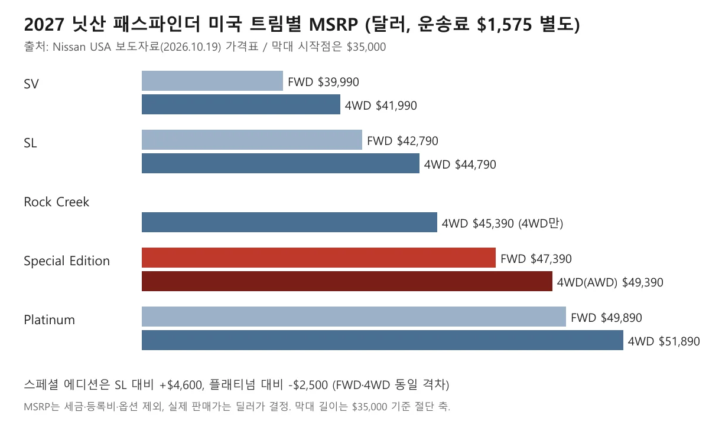
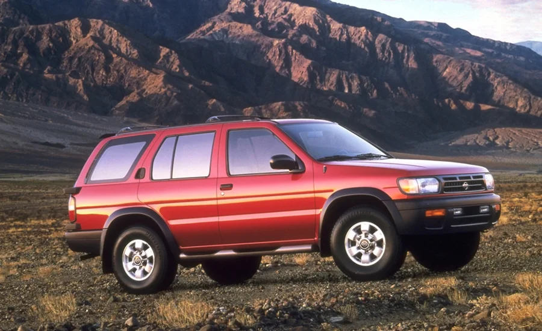

▲ 2027 패스파인더 스페셜 에디션 전측면. 검은 20인치 알로이 휠이 적용된다 ⓒ Nissan North America (제조사 프레스룸 이미지, 사용자 책임 하 사용)
"패스파인더 40주년 에디션이 나왔다는데, 정말 이름이 '40주년 에디션'일까?" 닛산 미국법인이 2026년 10월 19일 발표한 2027년형 패스파인더 신규 트림의 정식 이름은 "스페셜 에디션(Special Edition)"이다. 외신 제목에는 40주년이라는 표현이 붙었지만, 닛산 보도자료는 "40년을 기념한 스페셜 에디션"이라고 쓴다.
이 글은 미국 닛산 뉴스룸 보도자료와 카버즈(CarBuzz, 2026년 10월 19일)의 보도를 바탕으로 트림 구성, 가격, 파워트레인, 출시 시기를 정리한다. 한국은 닛산이 2020년에 철수한 시장이라, 독자 입장에서 이 차가 어떤 의미인지도 마지막에 따로 짚었다. 기준일은 2026년 10월 20일이다.
1. 닛산이 공식 발표한 것: 이름은 스페셜 에디션, 콘셉트는 1987년형 오마주
닛산 미국법인은 2026년 10월 19일 테네시 내슈빌발 보도자료로 "2027 패스파인더 스페셜 에디션"을 공개하고, 이 트림이 1세대 패스파인더에 대한 오마주라고 밝혔다. 보도자료는 이 트림을 "패스파인더가 시장에 나온 지 40년째를 기념하기 위한" 모델로 소개한다. 닛산 미국·캐나다 제품기획 부사장 마르코 피오라반티는 패스파인더가 40년 동안 SUV에 대한 선입견에 도전해 왔다고 밝혔고, 보도자료는 이 트림이 "패스파인더가 시장에 나온 지 40년째를 기념하기 위한" 모델이라고 적는다.
이 글의 소재가 된 카버즈 기사 "2027 Nissan Pathfinder Gets Retro Rework For 40th Anniversary"(2026.10.19, 비크네시 비제옌티란)도 같은 가격과 사양을 전한다. 다만 "40th Anniversary"는 매체의 표현이고, 닛산 쪽 정식 이름에는 들어가 있지 않다. 이 글에서는 닛산 표기인 "스페셜 에디션"을 쓴다.
원문과 가격표는 닛산 미국 뉴스룸에서 볼 수 있다. 닛산 뉴스룸 바로가기
2. 복고 디자인: 버건디 시트와 붉은색 포인트
닛산이 공식 확인한 복고 요소는 검정·버건디 투톤 시트(테일러핏 소재)와 붉은색 외장 포인트, 후면 리프트게이트의 붉은 PATHFINDER 레터링이다. 보도자료는 시트가 1987년형 원조 모델의 버건디 천 시트를 참고한 것이라고 적는다. 보도자료 사진에도 원조의 버건디 스티어링 휠과 실내 사진이 함께 실렸다.

▲ 닛산이 "1987년형 패스파인더"로 제공한 흑백 사진. 2도어 컴팩트 SUV였다 ⓒ Nissan North America (제조사 프레스룸 이미지, 사용자 책임 하 사용)

▲ 닛산이 "1987년형"으로 제공한 실내 사진. 버건디 톤 스티어링 휠과 대시보드가 보인다 ⓒ Nissan North America (제조사 프레스룸 이미지, 사용자 책임 하 사용)
카버즈는 여기에 더해 그릴의 가로 흡기구 3줄과 C필러 플라크에도 붉은 포인트가 들어가고, 대시 트림에 "SE 1986"이 새겨진다고 전했다. 이 세 가지는 이번 조사에서 닛산 보도자료 본문으로는 확인하지 못했다. 그래서 "(카버즈 보도)"로 한정해서 읽어야 한다. 도장색도 보도자료에는 이 트림 전용으로 명시된 색이 없다.

▲ 닛산이 "2027 패스파인더 스페셜 에디션의 스티어링 휠·대시보드·윈드실드"로 소개한 실내 사진 ⓒ Nissan North America (제조사 프레스룸 이미지, 사용자 책임 하 사용)
3. 가격: 전륜구동 $47,390, AWD $49,390
스페셜 에디션의 미국 MSRP는 전륜구동 $47,390, 인텔리전트 AWD $49,390이며, 여기에 운송 및 취급 비용 $1,575가 별도로 붙는다. 운송료를 더하면 각각 $48,965, $50,965지만, 이 합계는 닛산이 발표한 수치가 아니라 계산값이다. 세금·등록비·옵션은 제외된 값이고 실제 판매가는 딜러가 정한다.

▲ 닛산 보도자료 가격표로 카프리즘이 직접 만든 도표. 스페셜 에디션을 붉은색으로 표시했다 ⓒ CarPrism (닛산 보도자료 데이터 기반, 제조사 이미지 아님)
| 트림 | 전륜구동(FWD) | 4WD(인텔리전트 AWD) |
|---|---|---|
| SV | $39,990 | $41,990 |
| SL | $42,790 | $44,790 |
| Rock Creek | 설정 없음 | $45,390 |
| Special Edition | $47,390 | $49,390 |
| Platinum | $49,890 | $51,890 |
같은 구동 방식끼리 비교하면 스페셜 에디션은 SL보다 $4,600 비싸고 플래티넘보다 $2,500 싸다. 이 격차 안에 검은 20인치 알로이 휠, 파노라믹 선루프, 2열 캡틴 시트, 뒷문 햇빛 가리개, 보스 12스피커 오디오, 견인 장치(히치 리시버)가 들어간다. 시작가 $39,990인 SV 전륜구동과는 $7,400 차이다.
카버즈 보도에 따르면 스페셜 에디션은 플래티넘 다음으로 비싼 트림이다. 같은 시기 다른 닛산 모델의 연식 변경 가격 흐름은 무라노 2027년형 기본 트림 삭제 기사와 캠리·알티마 2027년형 가격 비교에서 따로 다뤘다.
4. 파워트레인과 견인력: 달라지는 것은 장비, 엔진은 그대로
스페셜 에디션도 다른 트림처럼 3.5리터 V6와 9단 자동변속기를 쓰고, 닛산 표기 출력은 284마력, 최대토크는 259lb-ft다. 보도자료는 성능을 높였다는 설명 없이 외관·실내·장비 구성 변화만 소개한다. 구동 방식은 전륜구동 또는 인텔리전트 AWD다.
| 항목 | 내용 |
|---|---|
| 엔진·변속기 | 3.5L V6, 9단 자동 |
| 출력·토크 | 284hp, 259lb-ft |
| 견인력 | 기본 3,500lb, 견인 장치 포함 시 최대 6,000lb(닛산은 "클래스 최고"로 표기) |
| 좌석 | 8인승, 2열 캡틴 시트 선택 시 7인승 |
| 화물 공간 | 3열 뒤 16.6ft³, 2·3열 접으면 80.5ft³ |
| 기본 장비 | 12.3인치 터치스크린, 무선 애플 카플레이·안드로이드 오토, 닛산 세이프티 실드 360 |
| 생산 | 미국 테네시주 스머나 공장(미국산·수입 부품 조립) |
6,000lb(약 2,722kg)라는 견인력은 견인 장치가 포함된 구성에서만 해당하고 실제 값은 구성에 따라 달라진다고 닛산이 단서를 붙였다. 별도 옵션으로 Qi2 무선 충전기와 3열 USB-C 포트가 있다. 판매 측면에서는 2026년 2분기에 역대 최고 분기 판매를 올렸고 9월에 누적 200만 대째를 팔았다는 것이 닛산 설명이다.
▲ 2027 패스파인더 측면. 2025년 11월 공개된 2026년형 페이스리프트 디자인을 이어받았다 ⓒ Nissan North America (제조사 프레스룸 이미지, 사용자 책임 하 사용)
2026년형 변경은 2025년 11월 13일 공개된 페이스리프트였다(위키백과 기준). 지금의 5세대(R53)는 2021년 2월 4일 공개돼 2022년형으로 판매가 시작됐다.
5. 패스파인더 40년: 1985년, 1986년, 1987년 중 어느 해가 기준인가
닛산은 이번 보도자료에서 패스파인더가 "1987년형으로 데뷔"했다고 쓰고, 그 기준으로 올해를 40년째로 센다. 닛산 미국 뉴스룸의 역사 소개 자료는 패스파인더(일본명 테라노)가 1986년 8월 공개됐고 "1986년에 1987년형으로 선보인" 2도어 모델이었으며, 4도어는 1990년형부터 추가됐다고 적는다. 위키백과는 1세대(WD21)가 1985년 5월 공개되고 생산이 1985년 4월부터 1995년 9월까지 이어졌으며, 미국에는 1986년 7월 1987년형으로 출시됐다고 적는다.
"1985년"이나 "1986년"이 기원으로 거론되는 것은 일본 공개와 미국 공개·출시 시점의 차이다. 미국 닛산이 공식 연식으로 삼는 해는 1987년이다. 다만 미국 출시 월은 닛산 자료(8월 공개)와 위키백과(7월)가 달라 월 단위로는 단정하지 않는다. 1985년 공개와 생산 시작은 위키백과 기술이며 닛산 1차 자료로 확인하지 못했다.
| 시점 | 내용 | 출처 |
|---|---|---|
| 1985년 | 1세대(WD21) 공개·생산 시작 | 위키백과 |
| 1986년 7~8월 | 2도어 SUV 미국 공개·출시(1987년형). 닛산은 8월 공개, 위키백과는 7월 출시로 기술 | 닛산 뉴스룸·위키백과 |
| 1987년형 | 닛산이 기념 트림의 기준으로 삼은 데뷔 연식 | 닛산 보도자료 |
| 1990년형 | 4도어 추가 | 닛산 뉴스룸 |
| 2004년 | 스머나 공장 조립 시작 | 닛산 보도자료 |
| 2021~2022년 | 5세대(R53) 공개·2022년형 판매 | 위키백과 |
| 2026년 9월 | 누적 200만 대째 판매 | 닛산 보도자료 |

▲ 닛산이 "초기 세대(early-generation)"로 표기한 사진. 연식은 닛산 설명에 적혀 있지 않아 단정하지 않는다 ⓒ Nissan North America (제조사 프레스룸 이미지, 사용자 책임 하 사용)
닛산은 이 차가 동급에서 가장 오래된 SUV 유산을 가졌다고도 주장하지만, 이는 닛산의 비교 주장(AutoPacific 세그먼트 기준)이다. 직접 확인한 수치는 아니다.
6. 한국 독자 관점: 2014년 국내 출시됐던 패스파인더, 닛산은 2020년에 떠났다
한국닛산은 2020년 5월 28일 닛산·인피니티 브랜드를 같은 해 12월 말 철수한다고 발표했고, 2004년 진출 후 16년 만의 철수였다. 아시아경제 영문판 등 보도에 따르면 기존 고객을 위한 품질보증과 부품 관리 같은 애프터서비스는 2028년까지 제공하기로 했다. 한국닛산은 본사가 한국에서 지속 가능한 성장 구조를 세우기 어렵다고 판단했다고 설명했고, 뉴스토마토는 일본 제품 불매운동과 코로나19 여파로 판매가 급감한 점을 배경으로 전했다(2020년 1~4월 닛산 판매 813대, 전년 동기 대비 41.3% 감소).
패스파인더는 한국에서 팔린 적이 있는 모델이다. 한국닛산은 2014년 1월 7일 서울 신라호텔에서 4세대(R52) 패스파인더를 출시했다. 뉴스토마토에 따르면 3.5L VQ 엔진(263마력, 최대토크 33.2kg·m)에 CVT를 맞춘 가솔린 모델만 들어왔다. 지금 닛산이 내놓은 스페셜 에디션은 그 후속 세대에 얹은 새 트림이지만, 국내에서는 구입할 수 없다.
그래서 이 스페셜 에디션을 국내에서 새 차로 살 수 있는 공식 경로는 없다. 닛산이 국내 재진출이나 이 모델의 한국 출시를 발표했다는 내용은 이번 조사에서 확인하지 못했다. 철수와 함께 판매가 끝난 모델의 사례는 닛산 리프 리뷰 기사에서 다뤘다.
▲ 한국에 2014년 출시된 4세대(R52) 패스파인더의 초기형. 2023년 독일 슈투트가르트에서 촬영 ⓒ Alexander-93 / Wikimedia Commons, CC BY-SA 4.0
참고로 읽을 점
- 한국에서 7~8인승 3열 SUV를 찾는다면 비교 대상은 현대 팰리세이드와 기아 텔루라이드 같은 모델이다. 현대·기아 3열 SUV 판매 기사를 참고할 수 있다.
- 미국 달러 가격을 원화로 환산한 값은 환율과 관세·세금에 따라 크게 달라지므로 이 글에서는 계산하지 않았다.
- 병행수입 가능 여부와 애프터서비스 조건은 이번에 확인하지 못했다.
닛산 본사 사정은 닛산 2026년 2분기 흑자 전환 기사에서 정리했다. 닛산 보도자료는 미국 소매 판매가 2026년 3분기에 6.8% 늘었다고 적는다. 패스파인더 스페셜 에디션은 미국 SUV·트럭 수요에 기대는 닛산의 전략 안에서 나온 모델로 볼 수 있다.
7. 이 글이 확인하지 못한 것
- 전용 도장색: 닛산 보도자료에 스페셜 에디션 전용 색상이 적혀 있지 않다
- "SE 1986" 대시 문구와 C필러 플라크, 그릴 붉은 포인트: 카버즈 보도로만 확인, 닛산 보도자료 본문에는 없다
- 생산 대수·한정 여부: 보도자료에 기재 없음
- 1985년 공개·생산 시작: 위키백과 기술이며 닛산 1차 자료로 확인하지 못했다. 미국 출시 월도 자료마다 다르다
- 한국 출시·병행수입: 확인된 계획이나 정보 없음
8. 요약
2027 패스파인더 스페셜 에디션은 닛산이 "40년 기념"으로 내놓은 복고풍 트림으로, 미국 MSRP는 전륜구동 $47,390, AWD $49,390이며 2026년 11월 딜러에 도착한다. 정식 이름에 "40th Anniversary"는 없다. 검정·버건디 시트와 붉은 외장 포인트, 20인치 검은 휠, 파노라믹 선루프, 보스 오디오, 견인 장치가 포함된다.
엔진은 3.5L V6 284마력으로 그대로고, 한국에서는 닛산이 2020년 12월 말 철수해 구입 경로가 공식적으로 없다. 국내 판매 계획은 확인되지 않으며, 한국 독자에게는 해외 소식으로 읽는 편이 맞다.